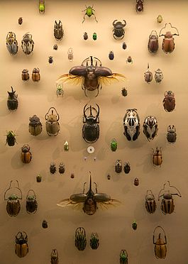

Жесткокры́лые, или жуки́ (лат. Coleoptera) — отряд насекомых, представители которого характеризуются видоизменением передних крыльев в твёрдые, сильно склеротизированные, либо кожистые надкрылья, лишённые жилкования, с сохранением перепончатых задних (нижних) крыльев, служащих для полёта и в спокойном состоянии сложенных под надкрыльями (очень редко крылья и надкрылья редуцированы). Для представителей отряда характерны грызущий или жующий ротовой аппарат, развитая передняя часть груди, подвижное сочленение переднегруди с её средней частью. Форма и размеры тела весьма разнообразны: от 0,3—1,0 мм до 171 мм.
Развитие с полным превращением: имеются стадии яйца, личинки, куколки и имаго. Личинки с хорошо развитой хитинизированной головой и грызущим ротовым аппаратом, преимущественно червеобразные или камподеевидные, у большинства видов с членистыми грудными конечностями, без брюшных ног. Куколки преимущественно свободные, обычно мягкие, неподвижные (двигаться может только брюшко), неокрашенные.
Жуки являются крупнейшей группой среди насекомых и живых существ в целом. По состоянию на август 2013 года в отряде насчитывается 392 415 видов, включая 2 928 вымерших видов, что составляет 40% от всех известных видов насекомых. По данным на 17 апреля 2013 года, на территории России обитает 13 504 вида жесткокрылых из 149 семейств.
По количеству описанных видов жуки являются наиболее многочисленной и разнообразной группой организмов на Земле. По состоянию на август 2013 года учёными описано 392 415 видов жуков, включая 2 928 ископаемых видов. Жесткокрылые очень разнообразны и большинство их видов плохо изучено, поэтому истинная оценка количества существующих видов является очень затруднительной. Некоторые из описанных видов известны только по находкам из одной единственной местности или даже по единственному экземпляру. Первая категоризация по системе Линнея предпринята в начале XIX века К. Г. Яблонским.
Жуки широко распространены по всему земному шару, в шести зоогеографических областях, кроме Антарктиды, ледниковой зоны Арктики и наиболее высоких горных вершин. Наиболее богато видами отряд представлен в тропических регионах.
Примерно 62 % всего разнообразия жуков составляют представители всего шести семейств: жуки-долгоносики (Curculionidae) — 60 000 видов, жуки-хищники (Staphylinidae) — 47 700, жужелицы (Carabidae) — 30 000, пластинчатоусые (Scarabaeidae) — 27 800, листоеды (Chrysomelidae) — 36 350, и усачи (Cerambycidae) — 26 000.
Размеры представителей группы колеблются в широких пределах. Одним из крупнейших жуком в мире считается дровосек-титан (Titanus giganteus) из Южной Америки, достигающий длины до 167 мм, а по некоторым неподтверждённым источникам даже до 210 мм. Крупнейшим жуком также является южноамериканский жук-геркулес (Dynastes hercules), отдельные особи самцов которого достигают длины до 171 мм. Крупнейшим также является крупнозуб оленерогий (Macrodontia cervicornis), с максимальной зарегистрированной длиной самца 169 мм (экземпляр из коллекции J.Sticher, Германия), средняя длина 130—155 мм. За ним следует вид Dynastes neptunus, с максимальной зарегистрированной длиной самца 158 мм, средняя длина 110—135 мм. Усач Xixuthrus heros с Фиджи также входит в пятёрку крупнейших жуков, достигая длины до 150 мм. Самым маленьким жуком является перокрылка Nanosella fungi из США, длина тела которой около 0,25 мм, что почти в 800 раз меньше, чем у самого большого жука.
Крупнейшим жуком, обитающим на территории Европы, является жук-олень (Lucanus cervus), отдельные особи самцов номинативного подвида которого могут достигать длины 83—86 мм при средней длине самцов 70—74 мм. Крупнейшим жуком, обитающим на территории России, является реликтовый дровосек (Callipogon relictus), достигающий длины 110 мм.